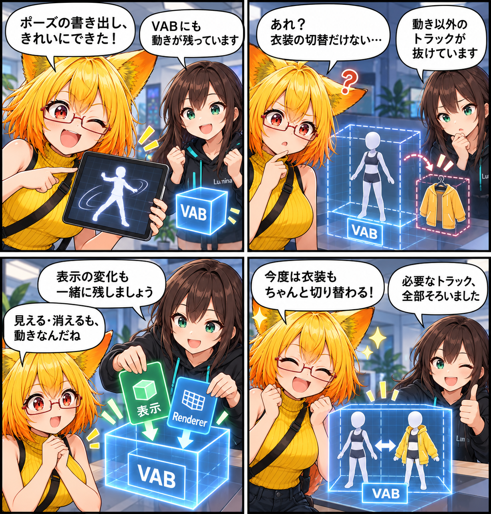

2026.10.08 / Development Log
見えない切替を、書き出しにも残す日
AV3の衣装表示アニメーションをVABへ書き出す際に、衣装の表示・非表示に必要なトラックを落とさないよう修正しました。
記事種別はdevelopment。集計期間は2026-10-07 03:00:00 JST〜2026-10-08 02:59:59 JST。参照ブランチはmain、終了時点のHEADは9cd764bea4844306daf2c8f290bec2ec5c1f65b3（AV3衣装表示アニメーションの書き出しを修正）です。対象は5コミットです。未コミット差分は実績に含めていません。

動きだけでなく、見える・消えるも書き出す
AV3のFX・Gesture・Actionで使われる衣装切替には、GameObjectの有効状態やRendererの有効状態を変えるアニメーションがあります。これらはポーズのような変形ではなく「表示状態」のトラックです。通常のアバターを書き出す経路でも、VAB側のVACトラックへ残すようにしました。
衣装だけを切り替えるクリップも残るように
これまではオブジェクト専用の経路だけが表示・Renderer・マテリアルのトラックを追加していました。この制限のため、衣装の表示切替だけを持つAV3クリップは通常の書き出しでVACトラックが0件になり、VABから消えてしまうことがありました。通常のアバター用クリップにも同じトラック追加を適用しました。
実際の表示状態をテストで確認
GameObject.m_IsActiveがnodeのactiveトラックに、MeshRenderer.m_Enabledがrendererのenabledトラックに残ることを、ConverterとRuntime Writerの両方で確認するテストを追加しました。書き出せたという結果だけでなく、衣装の切替に必要な情報が含まれることまで守ります。
4コマの裏話
今回は、ポーズを書き出せた安心のあとで衣装切替だけが見当たらないことに気づく「成功したのに型」です。最後は、見えない切替もデータに残ったことを二人で確かめる構成にしました。
まとめ
AV3衣装切替の表示アニメーションを、通常のVAB書き出しでもVACトラックとして保持するよう修正しました。衣装だけを切り替えるクリップも、必要な表示情報とともに残せます。
本日のひとこと
見た目を変える一手も、動きと同じくらい大切。